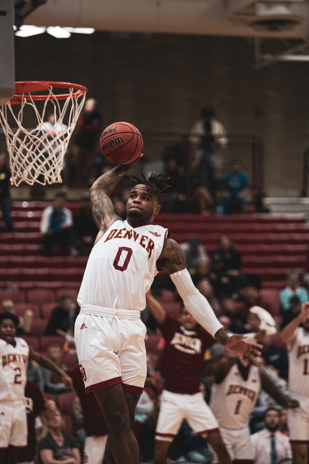

구기 종목 중 하나. 공을 림에 넣는 것을 득점으로 하여, 1점이라도 더 높은 쪽이 승리하는 경기이다. 한 팀당 5명의 선수가 선발된다. 4쿼터로 진행되며, 한 쿼터당 10분, 총 40분이 경기 규정 시간이다.[1] 변종 종목으로 3x3 농구라 하는, 하프 코트(Half Court)[2]에서 골대 하나를 놓고 하는 농구도 있다.일명 길거리 농구 혹은 Street Ball.
1891년 매사추세츠 주 스프링필드의 YMCA 체육학교에서 근무하던 캐나다인 제임스 네이스미스가 YMCA 체육학교에서 학생들에게 가르칠만한 실내운동을 고안하던 중, '지상에서 10 피트 정도 떨어진 바구니에 공을 넣으면 어떨까?'라는 아이디어에서 착안되었다. 그는 자신의 아이디어에 겨울 스포츠의 필요성과 속도감, 그리고 실내라는 한계성을 고려해서 13개의 기본 조항을 제정한 후, 처음으로 농구 경기를 창안하였다. 미식축구와 달리 몸싸움이 없는 안전한 스포츠를 만들고 싶어서 고안하게 되었다고 한다. 강력한 몸싸움을 기본으로 하고 있는 현재의 농구를 보면 '이게 뭔 개소리야?' 싶겠지만 네이스미스 박사는 처음 농구를 고안할 때, 선수들 간의 과도한 신체 접촉을 배제하는 스포츠를 만들려고 했다. 그러나 농구가 생긴 지 그리 오래 지나지 않아 과격한 몸싸움은 자연스럽게 용인되었다.